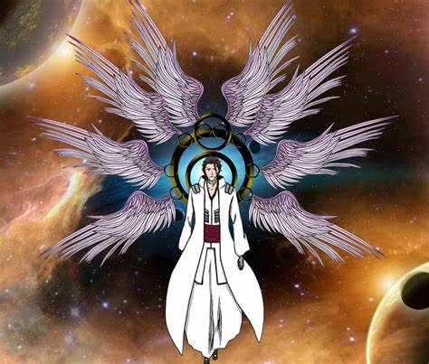

Biography
Sosuke Aizen is a former captain of the 5th Division in the Gotei 13 and is one of the main antagonists in the "Bleach" series. Known for his intelligence and manipulative nature, Aizen is a master strategist who orchestrated many events to achieve his goals.
Abilities
- Shinigami and Hollow abilities
- Mastery of Kido
- Immense spiritual power
- Manipulation of reality (Kyoka Suigetsu)
Quotes
"It's not the strong that survive, but the smart." - Sosuke Aizen
Gallery
